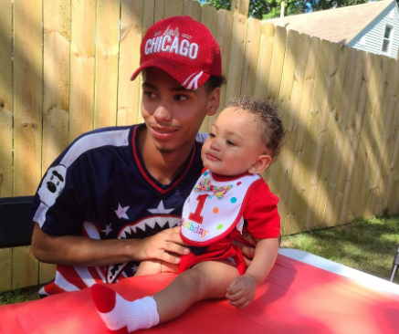

REMEMBERING DAUNTE WRIGHT
Daunte Wright was a loving Son, Father, and Sibling. Described as a good man by his family and peers.
WHAT HAPPENED?
According to Chief Tim Gannon of the Brooklyn Center Police Department, officers pulled Mr. Wright over on Sunday afternoon for a traffic violation related to expired registration tags. Officers then discovered that he had a warrant for his arrest. As the police tried to detain Mr. Wright, he stepped back into his car, prompting a brief struggle with officers, Chief Gannon said. In graphic body camera footage shown to reporters on Monday, one officer can be seen pointing a handgun at him and shouting “Taser.” After the car pulls away, the officer yells an obscenity and says, “I just shot him” to two other officers, according to the video. The car traveled several blocks and struck another vehicle. The police and medical workers pronounced Mr. Wright dead at the scene. “It is my belief that the officer had the intention to deploy their Taser but instead shot Mr. Wright with a single bullet,” Chief Gannon said. The officer who shot Mr. Wright was identified on Monday evening as Kim Potter, a 26-year veteran of the department. Officials said she had been placed on administrative leave. [As reported by NYT]
Daunte Wright, who had a 2-year-old son, dropped out of high school about two years ago because of a learning disability, his father said. Since then, he worked in retail and fast-food restaurants to support his son. He planned to go back to school to get his GED. “He was a great kid,” Aubrey Wright said. “He was a normal kid. He was never in serious trouble. He enjoyed spending time with his 2-year-old son. He loved his son.” Isaiah Caldwell, 22, said in high school, he was close friends with Daunte’s sister and that they all used to go to the Boys & Girls Club in West St. Paul. He described Daunte as a “good guy” who “had a lot of love for his family.” “He didn’t deserve that,” Caldwell said. “It’s not right.” [Reported by the Washington Post]
WHAT CAN YOU DO?
Make Phonecalls
What to say when you call: "I am calling on behalf of Daunte Wright. He was shot on April 11th near Brooklyn Center by officer Kim Potters. We demand a full investigation, accountability against the officers involved, and that the officer Kim Potters be arrested."
| Brooklyn Center Police | (763)569-3333 |
| Brooklyn Center City Hall | (763)569-3300 |
| MN Attorney Gen Ellison | (651)296-3353 |
| Minneapolis Mayor Frey | (612)673-2100 |
| MN Gov Tim Walz | (651)201-3400 |
DONATE TO THE FAMILY
The Daunte Wright Sr. Memorial FundHow to Support Daunte Wright's Son and Girlfriend
DONATE TO MUTUAL AID
Brooklyn Center Mutual AidBrooklyn Center Mutual Aid Needs (Brooklyn Center HS)
DONATE TO MINNESOTA + NATL ORGS
EDAlliesVoices for Racial Justice
Ujamaa Place
NAACP Legal Defense Fund
Justice Squad MN
Reclaim the Block
MN Freedom Fund
ACLU MN
Center for Economic Inclusion
SIGN THE PETITION
Justice for Daunte WrightSEND AN EMAIL
Input your info to autogenerate emails, so all you have to do is hit send!
Our secret magic makes sure your email looks a bit different than others. Click the "Justice for the Murder of Daunte Write after you've clicked sumbit.
Add an additional sentence to diversify your generated email. PB-Resources does not store any information at all.
Ready to send!
Justice for the Murder of Daunte Wright
EDUCATE YOURSELF
Stop placing the burden on Black folks in your life to Educate you.
What Does 'Defund the Police' Mean?I Don't Understand a term commonly used in BLM discourse
How can I support the Black LGBTQ+ Community?
How can I support the Black Trans Community?
What Books can I read to learn about Black Lives?
What Movies can I watch to learn about Black Lives?
What Podcasts can I listen to, to learn about Black Lives?